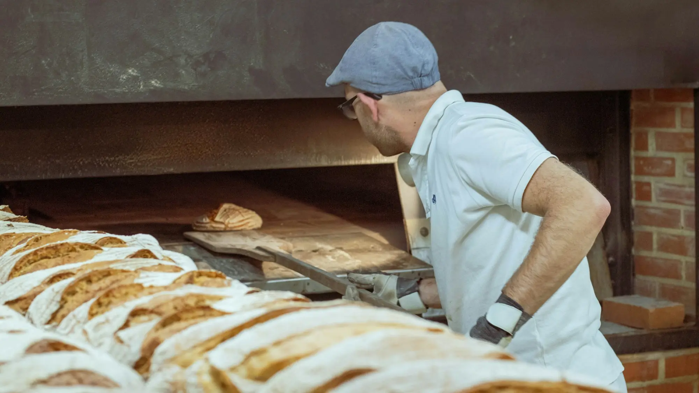

Nosotros
Una panadería de barrio, hecha con calma
Horneamos cada día con ingredientes sencillos, tiempos largos de fermentación y el cuidado de las recetas de casa.
Nuestra historia
Miga & Horno nació de una idea simple: hacer pan como se hacía en casa, sin apuros. Empezamos con unas pocas hogazas de masa madre y el pan dulce que acompañaba el café de la tarde.
Hoy seguimos horneando en tandas pequeñas, combinando técnicas de panadería artesanal con sabores nicaragüenses como el pan de coco y la cosa de horno.
Lo que nos importa
Ingredientes simples
Harina, agua, sal y tiempo. Sin conservantes ni mejoradores.
Tandas pequeñas
Horneamos varias veces al día para que el pan salga fresco.
Recetas de casa
Mantenemos vivos los sabores de la repostería nicaragüense.
Nuestro proceso
Del amasado al mostrador, sin atajos.
Masa madre
Alimentamos nuestra masa madre a diario; es la base de los panes artesanales.
Fermentación lenta
Las masas reposan entre 12 y 24 horas para ganar sabor y textura.
Formado a mano
Cada pieza se pesa y se forma a mano antes de entrar al horno.
Horneado diario
Horneamos a primera hora y por la tarde.
En el obrador
Pásate por la vitrina
Revisa lo que tenemos hoy y escríbenos si quieres apartar algo.